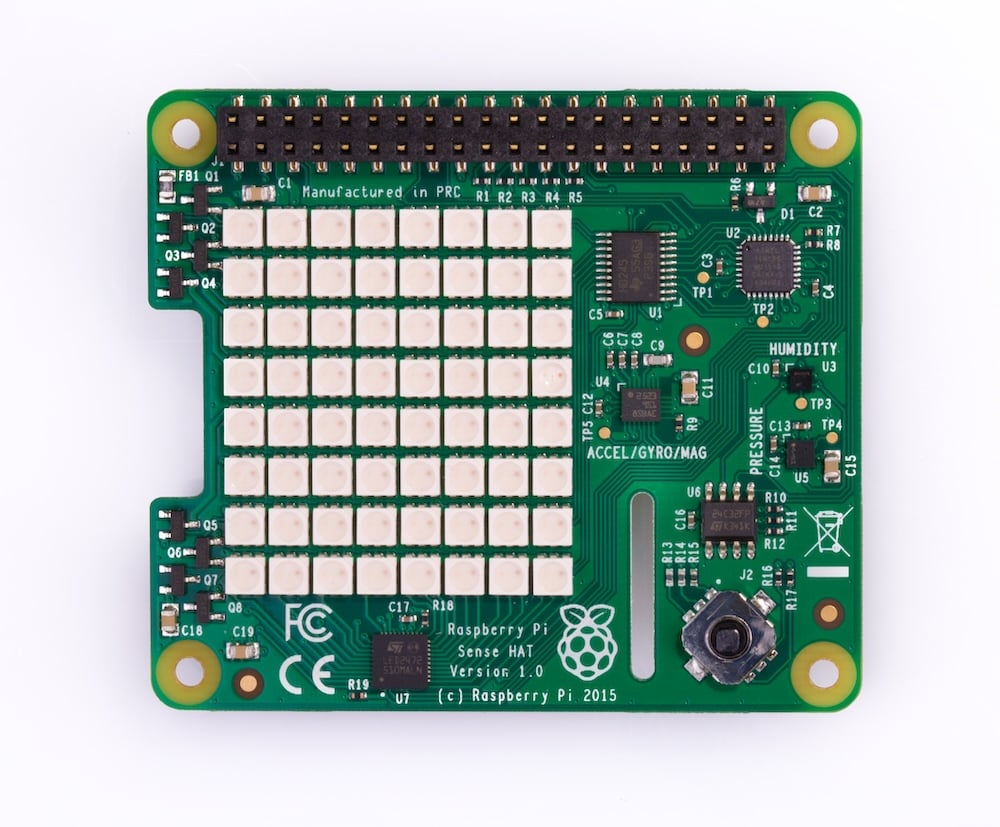

1. Set up your Sense HAT
from sense_hat import SenseHat
sense = SenseHat()Python is loading. The first visit may take a moment.

Click the joystick on the board, or focus it and use the arrow keys and Enter.
LED rotation: 0°Top view · connector at top · pixel (0, 0) at top leftSimulated acceleration in g (units of gravity).
Flat and still: X = 0, Y = 0, Z = 1.
Read with sense.get_accelerometer_raw()
Run the setup once, then try any example below.
Colours use [red, green, blue], each from 0 to 255.
from sense_hat import SenseHat
sense = SenseHat()x goes across; y goes down. Both range from 0 to 7.
# Top-left pixel, red
sense.set_pixel(0, 0, 255, 0, 0)
# Or use a colour list
sense.set_pixel(7, 7, [0, 255, 0])sense.clear(0, 0, 255) # All blue
sense.clear() # All offsense.show_letter("A", text_colour=[255, 0, 0])
sense.show_message("Hello!", scroll_speed=0.1,
text_colour=[0, 255, 0])Use 64 colours, one row at a time, starting at the top.
pixels = [[0, 0, 0] for i in range(64)]
pixels[0] = [255, 0, 0] # Top left
pixels[63] = [0, 255, 0] # Bottom right
sense.set_pixels(pixels)colour = sense.get_pixel(0, 0)
print(colour)
pixels = sense.get_pixels()sense.set_rotation(90) # 0, 90, 180, 270
sense.flip_h() # Left to right
sense.flip_v() # Top to bottomimport time
time.sleep(1) # Wait one second
sense.low_light = True # Dim the displayDirections: up, down, left, right, middle.
Actions: pressed, held, released. Use Stop to end this loop.
import time
while True:
for event in sense.stick.get_events():
if event.action == "pressed":
print(event.direction)
time.sleep(0.05)event = sense.stick.wait_for_event()
print(event.direction, event.action)The sliders change X, Y and Z in units of gravity.
acceleration = sense.get_accelerometer_raw()
print(acceleration["x"])
print(acceleration["y"])
print(acceleration["z"])Save your work with Save .py before leaving. Use the editor to run commands and scripts. Programs finish automatically after their last instruction when no joystick callbacks remain. Input and event waits stay active. Continuous loops need Stop.
On a Raspberry Pi, open the saved .py file in Python 3. Keep the same Sense HAT import. Hardware projects require a Sense HAT and its official Python library.
This is an independent teaching simulator. Its font is simplified to uppercase. Hardware, image loading, extra packages, generators, explicit async/await, complex decorators, custom properties and advanced function callbacks are not supported. Accelerometer sliders control raw X, Y and Z readings. Other sensor values remain fixed.
Official Sense HAT command reference ↗